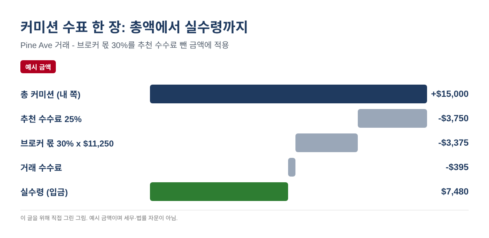
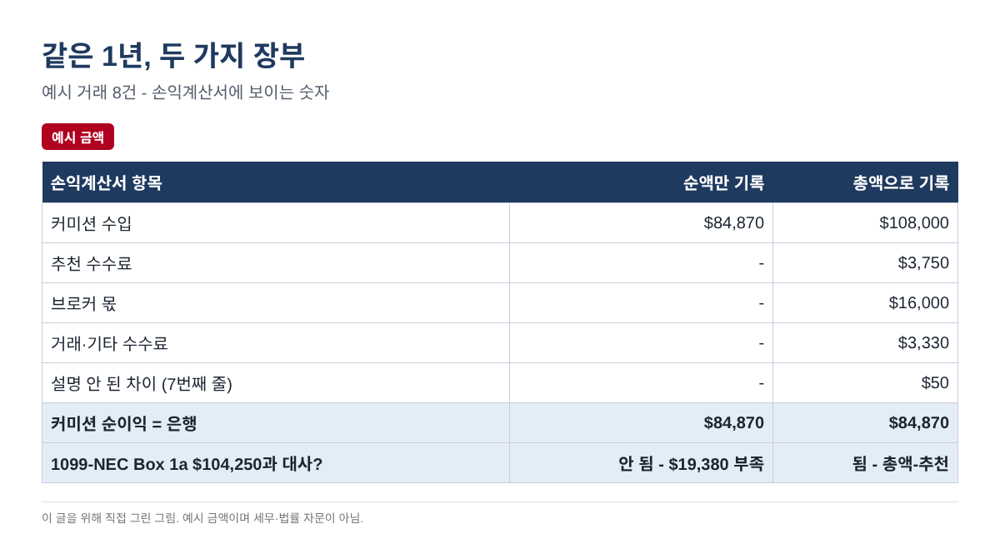
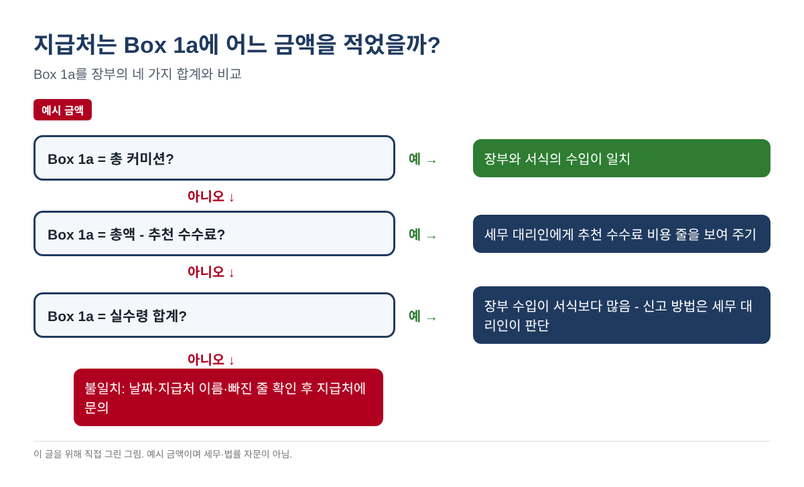

커미션은 $15,000인데 입금은 $7,480: 부동산 에이전트 커미션 분할을 QuickBooks에 총액으로 기록하고 1099-NEC와 맞추는 법
예시 에이전트가 Pine Ave 매매를 마쳤습니다. 커미션 지급 명세서에는 내 쪽 커미션 $15,000, 바이어를 소개한 에이전트에게 주는 추천 수수료 25%($3,750), 브로커 몫 30%($3,375), 거래 수수료 $395가 적혀 있고, 사업 계좌에 들어온 수표는 $7,480입니다. 이런 거래가 1년에 8건, 총 커미션은 $108,000인데 입금 합계는 $84,870입니다. 그리고 1월에 브로커리지가 보낸 1099-NEC의 Box 1a에는 $104,250이 찍혀 있습니다.
장부에 입금액 $84,870만 들어 있으면 입금 합계와 Box 1a 사이의 $19,380 차이를 QuickBooks 안에서 설명할 방법이 없고, 브로커리지에 1년 동안 얼마를 냈는지도 보이지 않습니다. 이 글에서는 수표를 총액으로 나눠 기록하는 법, 연간 상한(cap) 처리, QuickBooks Online과 Desktop 입력, 그리고 Box 1a가 어느 금액인지 찾는 순서를 예시 숫자로 끝까지 따라갑니다. 모든 금액은 예시입니다.
이 글은 일반적인 장부 정보이며 세무·법률 자문이 아닙니다. 본인의 신고 방법은 면허가 있는 세무 전문가와 확인하세요.
$7,480 수표는 어떻게 만들어졌나
은행 입금 줄이 아니라 커미션 지급 승인서(CDA)나 정산 명세서에서 출발합니다. 공제 항목은 각각 비용 줄이 되고, 총 커미션이 수입이 됩니다. 브로커 몫을 추천 수수료를 뺀 금액에 적용하는 계약도 있고 전체 금액에 적용하는 계약도 있으므로, 계산 순서를 먼저 계약서에서 확인해야 합니다.
| Pine Ave 거래 (예시 금액) | 금액 | 계산 |
|---|---|---|
| 총 커미션 (내 쪽) | $15,000.00 | 지급 명세서 금액 |
| 추천 수수료 | -$3,750.00 | $15,000의 25% |
| 브로커 몫 | -$3,375.00 | 30% x ($15,000 - $3,750) |
| 거래 수수료 | -$395.00 | 거래당 정액 |
| 실수령 (입금) | $7,480.00 | 은행 금액과 같아야 함 |

순액만 넣은 장부가 연말에 막히는 이유
$7,480을 Commission Income으로 바로 넣으면 빠르고 은행 대사도 맞습니다. 문제는 연말에 드러납니다. IRS Schedule C 안내서는 1099-NEC를 받았다면 1행에 1099-NEC에 올바르게 표시된 금액이 포함되었는지 확인하라고 합니다. 지급처가 받은 수표보다 큰 금액을 신고했는데 장부에는 순액만 있으면, 명세서를 다시 꺼내 1년 치를 재구성해야 합니다. 총액 장부에는 이미 큰 숫자가 들어 있고, 브로커 몫과 수수료가 비용 줄에 따로 남아 해마다 비교할 수 있습니다.
| 예시 거래 8건 | 순액만 기록 | 총액으로 기록 |
|---|---|---|
| 커미션 수입 | $84,870 | $108,000 |
| 추천 수수료 | - | $3,750 |
| 브로커 몫 | - | $16,000 |
| 거래·기타 브로커리지 수수료 | - | $3,330 |
| 설명 안 된 차이 (부족한 수표 1장) | - | $50 |
| 커미션 순이익 (= 은행) | $84,870 | $84,870 |

두 장부 모두 $84,870에서 끝나므로 현금과 은행 대사에는 차이가 없습니다. 달라지는 것은 총액 장부만 1099-NEC와 비교할 수 있다는 점, 그리고 $50이 작은 입금 속에 묻히지 않고 브로커리지에 물어볼 항목으로 드러난다는 점입니다.
연간 상한(cap)이 거래 중간에 걸리면
많은 분할 플랜은 에이전트가 1년에 정해진 상한만큼 브로커 몫을 내면 그 뒤로는 몫을 받지 않습니다. 예시 플랜은 30%, 상한 $16,000입니다. 4건이 끝났을 때 이미 $15,255를 냈습니다. 5번째 Cedar Ln 거래는 30%면 $3,150이지만 상한이 $745만 남아 몫은 $745, 수표는 $10,500 - $745 - $395 = $9,360입니다. 그 뒤 거래는 상한 연도가 다시 시작될 때까지 몫이 $0입니다.
엑셀이나 구글 시트에서 거래를 날짜 순서로 한 줄씩 넣고, E열 총 커미션, F열 추천 수수료, G열 거래 수수료, H열 기타 공제, I열 실제 수표 금액을 입력합니다. $B$1에 몫 비율, $B$2에 상한, $B$3에 "After referral" 또는 "Before referral"을 넣습니다. 첫 데이터 줄(여기서는 6행) 수식은 다음과 같습니다.
- 몫 계산 기준, O열:
=IF($B$3="Before referral",E6,E6-F6) - 상한 적용 전 몫, P열:
=O6*$B$1 - 올해 이미 낸 몫, Q열:
=SUM(K$5:K5)(5행은 제목 줄이라 첫 줄은 0) - 실제 몫, K열:
=IF($B$2>0,MAX(0,MIN(P6,$B$2-Q6)),P6) - 예상 실수령, L열:
=E6-F6-K6-G6-H6 - 상태, N열:
=IF(ABS(I6-L6)<0.01,"OK","CHECK")
이 줄을 아래로 복사합니다. MIN과 MAX가 상한이 일부만 남은 거래를 처리합니다. 몫은 남은 상한보다 클 수 없고, 상한을 다 쓴 뒤에는 마이너스가 되지 않습니다. 쓰기 전에 두 가지를 계약서에서 확인하세요. 상한 연도가 달력 기준인지 가입 기념일 기준인지, 그리고 상한 이후에도 거래 수수료가 계속 붙는지입니다. 계속 붙는 플랜이 많아서 예시에서도 상한 이후 거래에 $395를 뺐습니다.
QuickBooks Online에 총액 입금으로 넣기
Intuit 도움말 "Record and make bank deposits in QuickBooks Online"(2026-11-25 확인)에 따르면 입금 화면에서 수수료를 마이너스 줄로 넣을 수 있습니다. 그래서 입금 한 건에 총수입과 모든 공제를 담을 수 있습니다.
- + Create → Bank Deposit를 선택합니다.
- Account에서 사업용 체킹 계정을 고르고, 날짜는 돈이 들어온 날로 둡니다.
- Add funds to this deposit에 Commission Income $15,000.00을 넣고 Received From에 브로커리지를 적습니다.
- Referral Fees Paid -3,750.00, Broker Split Expense -3,375.00, Brokerage Fees -395.00을 마이너스 금액으로 추가합니다.
- 합계가 은행 금액인 $7,480.00인지 확인하고 저장합니다.
분개가 편하다면 Intuit 도움말 "Create a journal entry in QuickBooks Online" 경로대로 + Create → Journal entry를 선택합니다. 차변 합계와 대변 합계가 같아야 저장됩니다.
| 계정 (예시) | 차변 | 대변 |
|---|---|---|
| Business Checking | 7,480.00 | |
| Referral Fees Paid | 3,750.00 | |
| Broker Split Expense | 3,375.00 | |
| Brokerage Fees | 395.00 | |
| Commission Income | 15,000.00 | |
| 합계 | 15,000.00 | 15,000.00 |
나중에 같은 $7,480이 은행 피드에 보이면 한 번 더 기록되지 않도록 확인하세요. 두 번 기록하면 커미션이 수입에 두 번 들어갑니다.
QuickBooks Desktop에서는 Record Deposits 한 화면으로
Intuit 도움말 "Record and make bank deposits in QuickBooks Desktop"(2026-11-25 확인)은 Home 화면의 Record Deposits(Make Deposits)에서 시작하며, 다른 From Account 줄에 금액을 마이너스 값으로 넣을 수 있다고 설명합니다. Pine Ave 수표라면 이렇게 넣습니다.
- Record Deposits를 열고 Deposit To에 체킹 계정을 선택합니다.
- 1번 줄: From Account에 Commission Income, 금액 15,000.00, 브로커리지 이름도 함께 적습니다.
- 2~4번 줄: Referral Fees Paid -3,750.00, Broker Split Expense -3,375.00, Brokerage Fees -395.00.
- 입금 합계가 7,480.00인지 확인하고 저장합니다.
입력 뒤에는 연간 Profit & Loss를 실행해 Commission Income이 거래 기록표의 총 커미션 합계와 같은지 보고, 은행 계정을 대사합니다. 입금은 수표 금액으로 정리되고, 비용 줄은 기록표의 각 열 합계와 같아야 합니다.
브로커리지는 Box 1a에 어느 금액을 적었을까
2026년 1099-NEC 양식에서는 비고용인 보수(nonemployee compensation)를 Box 1a에 적습니다(이전 양식은 Box 1). 이 금액을 만드는 방식은 지급처마다 다를 수 있습니다. 무엇을 고치기 전에 Box 1a를 그 지급처의 네 가지 합계와 비교합니다. 총 커미션, 총 커미션에서 추천 수수료를 뺀 금액, 받은 수표 합계, 예상 실수령(받았어야 할 금액)입니다. 예시에서 $104,250 = $108,000 - $3,750이므로, 이 브로커리지는 에이전트 대신 지급한 추천 수수료를 뺀 금액을 신고한 것입니다.

어느 것과도 맞지 않으면 보통 다른 해로 날짜가 잡힌 거래, 기록표에 두 가지로 적힌 지급처 이름, 브로커리지가 아니라 타이틀 회사가 지급한 거래가 원인입니다. 이것부터 고친 뒤 지급처에 Box 1a 계산 방법을 물어보세요. 숫자를 맞추려고 이미 기록한 거래를 바꾸지 말고, 대사표와 손익계산서를 신고서를 준비하는 분에게 전달해 차이를 어떻게 신고할지 판단하게 하세요.
직접 보낸 추천 수수료와 2026년 $2,000 기준
클로징 때 브로커리지가 준 추천 수수료는 브로커리지의 지급입니다. 내 계좌에서 다른 에이전트에게 직접 보낸 추천 수수료는 다릅니다. 이때는 내가 지급자입니다. IRS 1099-MISC·1099-NEC 안내서(2026년 12월 개정판)는 2025년 이후 시작하는 과세연도부터 최소 신고 기준 금액이 $2,000으로 올랐고 2027년부터 물가에 따라 조정될 수 있으며, 1099-NEC는 1월 31일까지 제출한다고 설명합니다. 기한이 토요일·일요일·법정 공휴일이면 다음 영업일로 넘어가며, 2027년 1월 31일은 일요일입니다. 2026년에 한 사람에게 직접 보낸 추천 수수료가 이 금액에 이르렀다면, 1월 전에 제출 의무를 세무 전문가와 검토하세요.
IRS의 부동산 에이전트 안내 페이지는 면허가 있는 에이전트가 보수의 거의 전부가 근무 시간이 아니라 판매 실적에 직접 연동되고, 연방 세법상 직원으로 보지 않는다는 서면 계약 아래 일하는 경우 statutory nonemployee로서 자영업자로 취급된다고 설명합니다. 본인이 여기에 해당하는지는 계약서와 전문가 상담으로 확인할 문제이며, 위의 장부 방법은 어느 경우든 같습니다.
판단이 필요한 거래들
- 공동 중개(co-broke). 매도인이 낸 전체 커미션이 아니라 내 쪽 총 커미션만 넣습니다.
- 매달 청구되는 데스크비, MLS 회비, E&O. 낼 때 사업 비용으로 기록하고 클로징 입금에는 넣지 않습니다. 공제 방법은 세무 대리인이 판단합니다.
- 명세서보다 적은 수표. 차이는 Ask My Accountant 같은 임시 계정에 두고, 월 마감 전에 브로커리지에서 빠진 항목을 받아 옵니다. 예시의 7번째 거래가 $50 부족했습니다.
- LLC나 S corporation으로 받는 커미션. 그 법인의 장부에 기록하고, 그 법인 앞으로 발행된 1099-NEC와 맞춥니다.
- 제3자 커미션 선지급(advance). 선지급은 클로징이 아닙니다. 기록 방법은 세무 전문가와 상의하고, 클로징은 실제로 끝났을 때 기록합니다.
위 과정을 그대로 해 주는 부동산 커미션 분할 기록기 2026 (Commission Split Recorder 2026)은 아래 무료 키트 다운로드에서 가입 없이 무료로 받으실 수 있습니다(엑셀 + PDF 가이드).
면책 안내와 출처
이 글은 장부 정리에 관한 일반적인 교육 정보입니다. 세무·법률·회계 자문이 아니며, 누구의 세법상 지위나 어떤 금액의 신고 방법을 판단하지 않고, 어떤 결과도 보장하지 않습니다. 규정과 프로그램 화면은 바뀔 수 있으니 본인의 상황은 면허가 있는 세무 전문가와 확인하세요. 모든 이름과 금액은 예시입니다. QuickBooks는 Intuit Inc.의 등록 상표이며, 이 글은 Intuit와 제휴·보증 관계가 없습니다(QuickBooks is a registered trademark of Intuit Inc.; not affiliated with or endorsed by Intuit).
- IRS, Instructions for Forms 1099-MISC and 1099-NEC (Rev. 12-2026): irs.gov/pub/irs-prior/i1099mec--2026.pdf - 확인일 2026-11-25
- IRS, Instructions for Schedule C (Form 1040) (2025), Line 1: irs.gov/instructions/i1040sc - 확인일 2026-11-25
- IRS, Licensed real estate agents - Real estate tax tips: irs.gov - 확인일 2026-11-25
- Intuit, Record and make bank deposits in QuickBooks Online: quickbooks.intuit.com - 확인일 2026-11-25
- Intuit, Create a journal entry in QuickBooks Online: quickbooks.intuit.com - 확인일 2026-11-25
- Intuit, Record and make bank deposits in QuickBooks Desktop: quickbooks.intuit.com - 확인일 2026-11-25
무료 키트 다운로드
글에서 설명한 내용을 그대로 따라 할 수 있는 도구입니다. 가입 없이 바로 받으세요.
- Excel 계산 도구 (.xlsx)Commission_Split_Recorder_2026_EN_KR.xlsx · 33 KB
- 단계별 가이드 (PDF)Commission_Split_Guide_2026_EN_KR.pdf · 338 KB
본인과 본인 사업에 무료로 쓰세요. 재판매·재배포는 하지 마세요. 일반 정보이며 세무·법률·회계 자문이 아닙니다. 숫자는 본인 자료로 꼭 확인하세요. QuickBooks는 Intuit Inc.의 상표이며 BIZLEX는 Intuit과 관련이 없습니다.